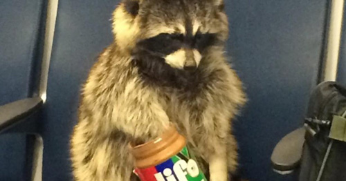

Though usually nocturnal, the raccoon is sometimes active in daylight to take advantage of available food sources. Its diet consists of about 40 percent invertebrates, 33 percent plant material and 27 percent vertebrates. Since its diet consists of such a variety of different foods, Zeveloff argues the raccoon "may well be one of the world's most omnivorous animals". While its diet in spring and early summer consists mostly of insects, worms, and other animals already available early in the year, it prefers fruits and nuts, such as acorns and walnuts, which emerge in late summer and autumn, and represent a rich calorie source for building up fat needed for winter.
